As an Aerospace Engineering student, I have a passion for aviation and space exploration. Of the two passions, aviation is the more accessible, and I have always wanted to design and build my own aircraft. This project was an opportunity to do just that, and I decided to design and build a fixed-wing UAV from scratch.
In addition to a custom-designed airframe (based on CFD tests) I wanted to challange myself by developing a completely custom digital communication protocol controlled from any Windows PC. Finally, I wanted the UAV to be relatively large, with a wingspan of approx. 1.1m, and stream telemetry data back to the ground station in real-time.
Currently, the project is in the final stages of development. The entire airframe except top cover has been 3D printed and assembled, all avionics have been tested and are operational, and the communication range has been verified at 500m line-of-sight with acceptable data rates. The final steps before flight is to add the top cover, and tweak ground-station cooling system to ensure safer temperatures during operation. Below is a short video test of the avionics (minus power amplifier due to heat concerns), in action.
Research is the first step in any project, and after researching the avilable options for RF modules, I decided at first to use the nRF24L01+ modules for their low cost and high data rate. The modules are rated for a range of 1km+ with a data rate of 2Mbps, which was more than enough for my application. For the servo controller, I went with the tried and true PCA9685, which is a 16-channel servo controller. In order to record orientation data, I used a MPU6050 6-axis gyroscope and accelerometer. For the main flight controller, I used a Teensy 4.0, which is a powerful microcontroller with a 600MHz ARM Cortex-M7. Admittedly, this was overkill for the application, but I wanted to limit any potential bottlenecks in the control system. For propulsion, I used a 40mm EDF (electronic ducted fan) powered by a brushless DC motor. The EDF and speed controller were rated for 500W peak power, with 500g of thrust, which was more than enough but I still validated the performance later on. Note that for the computer to NRF24 connection I used an unofficial varient of the Raspberry Pi Pico which offered some extra features compared to the offical varient (specifically, USB-C). Pictured below is the first iteration of the avionics test rig in the center, and the Pico transciever setup on a breadboard on the right.
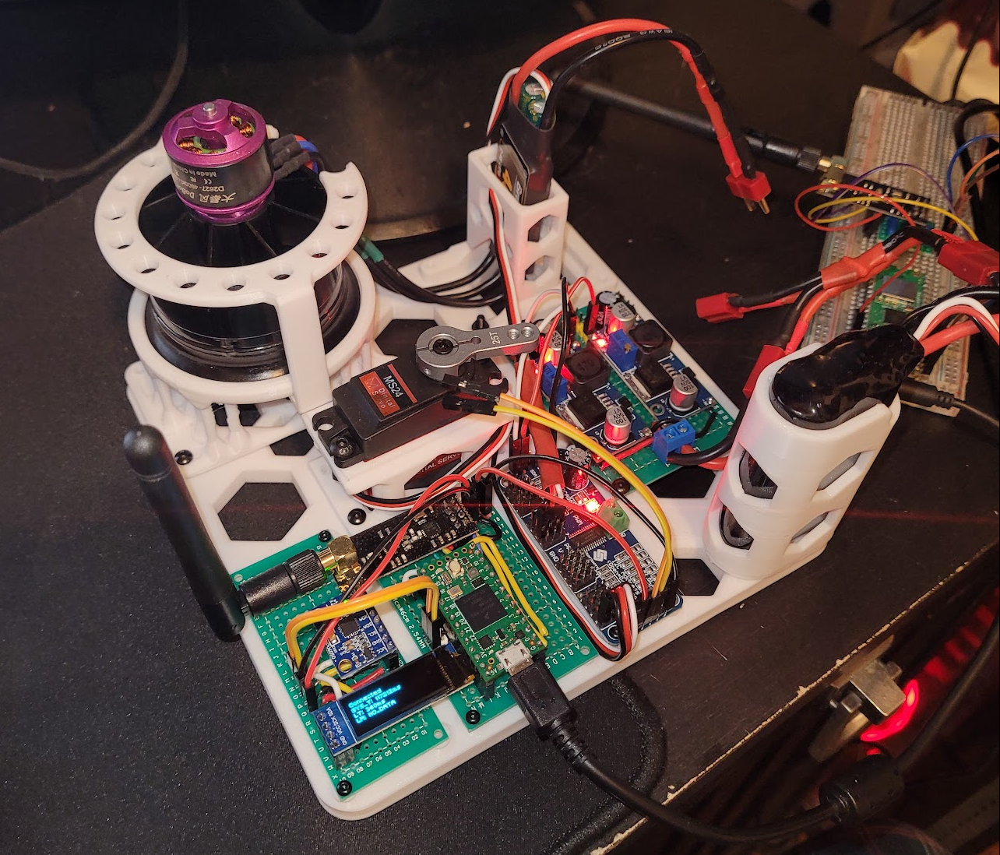Once this test rig was complete, I spent considerable time designing and programming the PC control software, which you can view on GitHub (along with all other code), and I go more into depth in the software section, but at a high level it was a simple GUI written in C++ that interfaced with the Pico over serial USB to send and recieve data.
To verify the thrust of the 40mm EDF, I set up a simple test rig where the motor was secured in place on a scale to measure the thrust output. The test showed a peak thrust output of 510g, exceeding the manufacturer’s specification slightly. This test provided the confidence needed to proceed with the propulsion setup in the airframe design. Below is a short clip of the test.
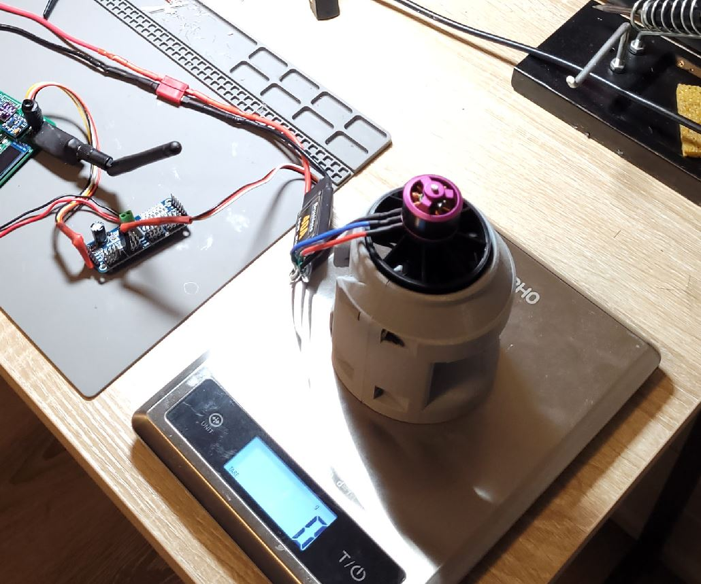The test-rig completed above showed excellent performance characteristics for control and telemetry speed, but I was having some issues with range. After researching more on the NRF24 modules, it turns out that they are very sensitive to poor power supply quality (including wiring), so I figured the best way to eliminate any issues casued by my (cheap) power setup was to make a custom PCB with components from reputable manufacterers and suppliers. I used 3.3v and 5.0v voltage regulators from the reputable Infineon Technologies, ordered directly from DigiKey. I also used appropriate decoupling capacitors and followed the datasheets for my power components to the letter. Pictured below is the resulting PCB, which I designed in Altium Designer and ordered from PCBWay. The soldered PCB is shown below, note the DIY shielding on the NRF24 module in an attempt to reduce interference and improve range.
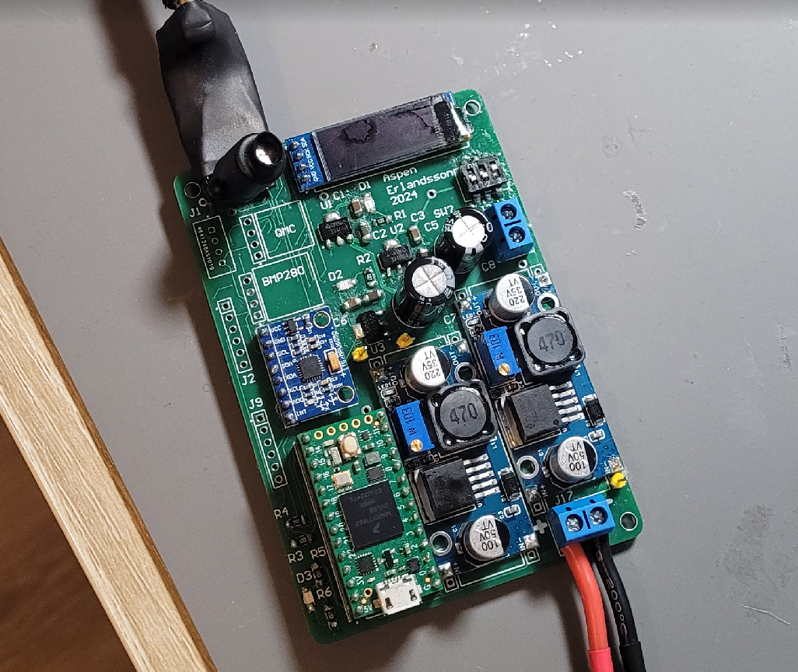I also created a temporary proto-board for the Pico transciever that connects to my PC, and 3D Printed a case for it. This was a temporary but effective solution for the time being. It is pictured in the image below alongside the powered custom PCB from the other image above.
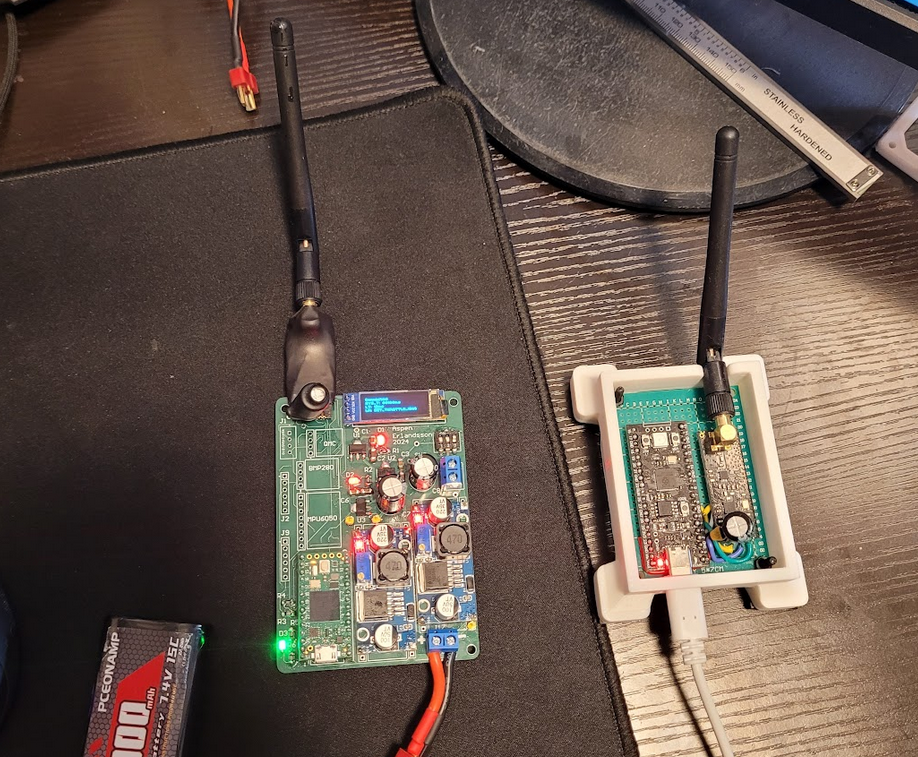
Feeling quite pleased with my work so far, I wanted to verify the power supply performance during transmitting and recieving conditions. I used my new and shiney Siglent SDS1104X-E oscilloscope to probe the voltage stability during operation. I was able to verify that the voltage ripple had a peak-peak value of ~4mV during transmission, which is well within the manufacterers specified limit of 20mV.
However, upon taking my prototype outside for a range test, I was very dissapointed to find that the reliable communication range was only about 20m, and the connection refused to work at allowing past 30m. After some more research, the poor performance could be caused by a number of reasons including interference (local WiFi), poor antenna quality, poor power supply quality, and inadequete shielding. Seeing as I had already eliminted the last two options, and I didn't have a good way to test or improve the conditions of the first (I was already using a 2.4GHz rated antenna provided with the modules).
With the test data to show that the nRF24L01 moduels were inadequete in range, but overkill in data rate, I decided to research alternatives that compromise datarate in favor of range. I settled on the LoRa class of modules, which are designed for long-range, relatively low data rate applications. I ordered a set of 4 Ra-02 LoRa modules operating on the 433MHz band. I held off on ordering a new PCB until I could verify at least some baseline performance even with a questionably wired and powered breadboard setup. My test setup is pictured below. Note the 4 LoRa modules total, they operate on slightly different frequencies to avoid interference, with pairs handling the transmit and recieve respectviely, this offers higher datarate and lower overhead compared to a single module setup switching between transmit and recieve. Additionally, using separate transmit and recieve paths allows for adding power amplifiers and low-noise amplifiers (as I do later on).
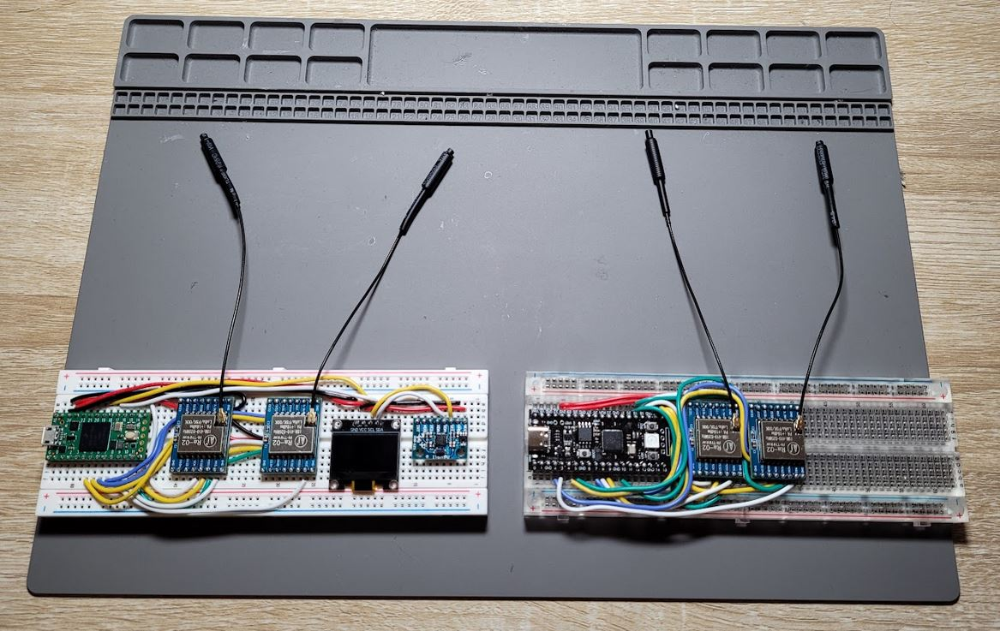To test the range of the LoRa modules I put my laptop with the ground-station breadboard connected to my laptop on a balcony, and walked down the street in line-of-sight with the recieving test rig, and I was able to obtain a reliable range of 100m, and a spotty connection up to 150m. While this is not good enough yet, it's much better, and to improve the range further I designed custom PCBs with better power supplies, and adding external power amplifiers to the LoRa modules.
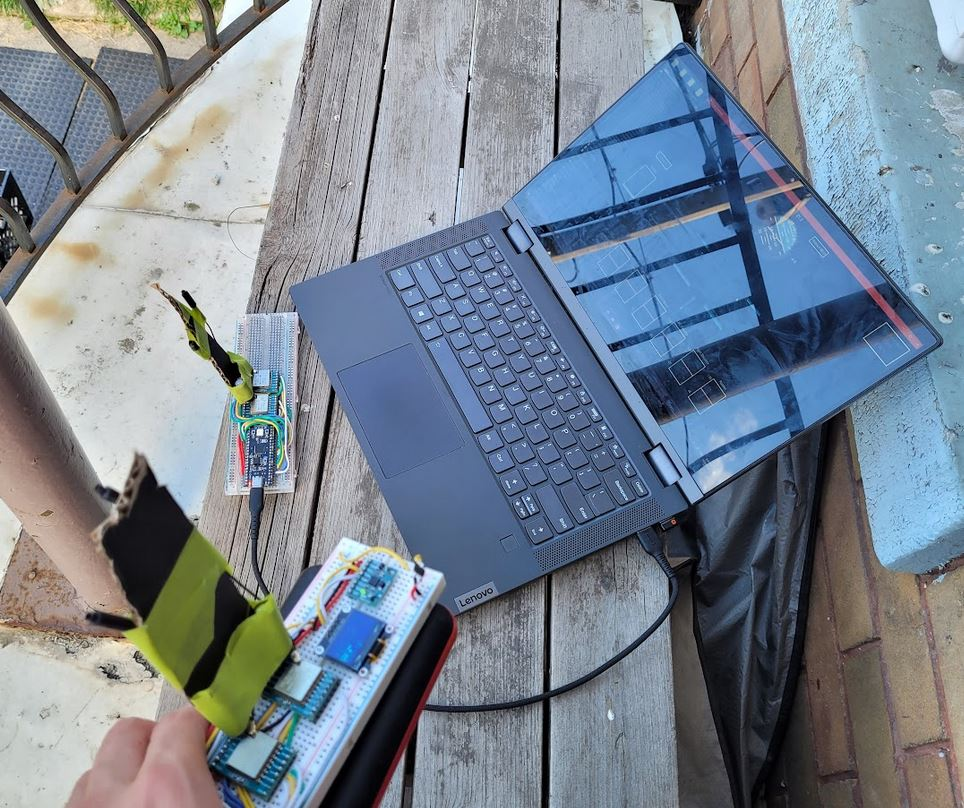 test rig with nRF24L01+ modules, teensy 4.0, rpi pico, servo controller, brushless dc motor, duct fan, iterative process with the failures of nrf24 to moving over to LoRa, talk about multiple phsaes of pcb design including the nrf24 version with bulky power converters onboard, the streamliend version with a single 3.3v regulator using lora modules but it had an issue with the trace routing so I had to order a new pcb lessons learned about triple checking PCBs since waitign for a new one is a pain. also talk about testing engine performance, starting battery 2s vs new 3s battery and how that improved thurstThe control software is a Windows application written in C++, using SFML for creating a simple GUI. It allows real-time control of the UAV via keyboard and mouse, while telemetry feedback is visualized on-screen. Telemetry data includes orientation, battery voltage, and a 3D-rendered preview of the UAV's control surfaces. The GUI runs on a separate thread from the serial communication, which handles the transmission and receipt of data from the UAV via the ground station. Below is a screenshot of the GUI in action.
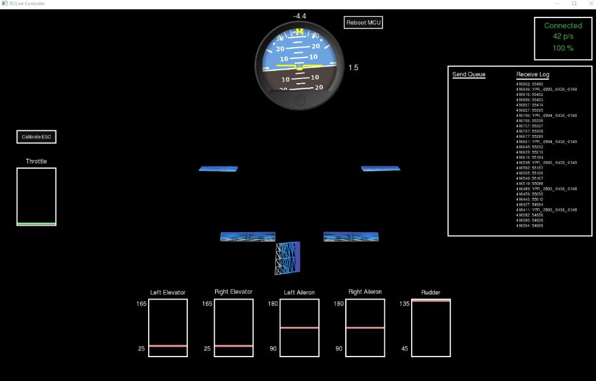The ground station firmware runs on the Raspberry Pi Pico, utilizing its dual-core architecture. One core handles communication with the LoRa module over SPI, while the other core handles serial communication with the PC. Mutexes are used to ensure reliable communication between the cores without race conditions. I used CMake for project organization and development. During testing, I discovered a flaw in the LoRa library that introduced a 40% slowdown in data transmission. I corrected this issue and submitted a pull request to the library's public repository. Below is a screenshot from my oscilloscope showing exceedingly slow SPI communication, limiting overall performance. THe issue was due to the library incorrectly initializing the SPI bus speed to 15KHz instead of 8MHz.
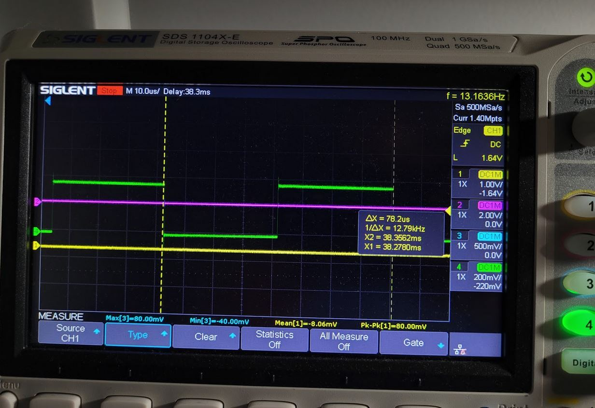The flight controller firmware, running on the Teensy 4.0, is responsible for real-time control surface adjustments and telemetry updates. The main loop checks for new RF data, reads IMU data (triggered by interrupts), and sends telemetry data such as battery voltage and orientation to the ground station. A debug OLED screen is also updated with connection info and device status. Fail-safe routines are embedded in the loop to neutralize the control surfaces and shut off the engine in case of lost communication.
LoRa and nRF24 modules only allow raw byte transfers, so I developed a custom protocol to manage communication. Initially, individual control packets for each device were sent, but this approach was inefficient and not very reliable if some packets dropped but others didn't (desync between control surfaces, etc). I switched to transferring serialized structs, Base64-encoded, which reduced the data size by 10x for the same information. This approach not only improved communication speed but also minimized the risk of transmission errors and reduced the module's time-on-air, lowering interference susceptibility. Below is a diagram of the communication protocol.
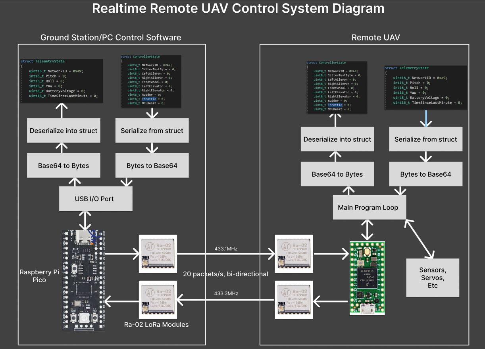I implemented a Kalman filter to combine gyroscope and accelerometer data from the MPU6050. The Kalman filter smooths noisy measurements and provides accurate and reliable orientation data for the UAV's control system. While I could have implemented the filter on the Teensy directly, I chose to use the MPU6050's internal processor to compute the filter at its maximum allowable measurement rate, bypassing bottlenecks related to inter-device communication and competing processes. This setup resulted in highly accurate and stable orientation readings even under simulated vibration conditions.
The design of this fixed-wing UAV follows traditional aircraft design principles. The flight envelope and wing loading were key considerations, with the use of carbon fiber rods to improve rigidity and prevent wing flex during flight. The relatively low aspect ratio of the wings was chosen to balance between lift generation and maneuverability, which fits the intended cruise speed. Wing loading calculations helped ensure that the aircraft could handle the intended payload, while Reynolds number analysis was used to optimize aerodynamic performance at different speeds. The final design accommodates both steady flight and smooth control under a variety of conditions.
The airfoil design was selected to provide optimal lift while minimizing drag. Key parameters like camber, thickness, and chord length were chosen to maintain a good lift-to-drag ratio across various angles of attack. The stall characteristics were also evaluated, ensuring that the aircraft remains stable at lower speeds. I focused on balancing lift and drag forces to balance with my size and weight constraints, and the choice of angle of attack and Reynolds number for cruise conditions was key to achieving the desirable flight characteristics.
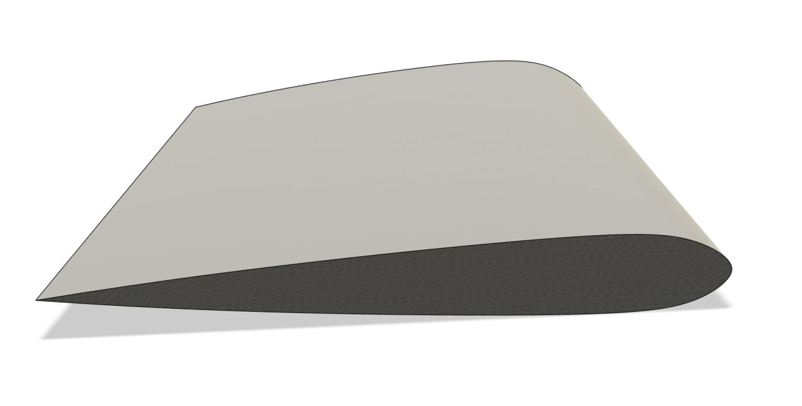I used CFD simulations to validate and optimize my airframe design, ensuring that drag and lift values aligned with my weight budget and thrust requirements. These simulations were run using FluidX3D on a 24GB RTX A6000 GPU for several hours to produce reliable results at low cost. The results provided accurate lift and drag coefficients across various speeds and angles of attack, helping refine the design before manufacturing. Below is a table showing lift and drag data at different speeds for the same angle of attack, this data in particular was gathered to better understand takeoff speeds required.
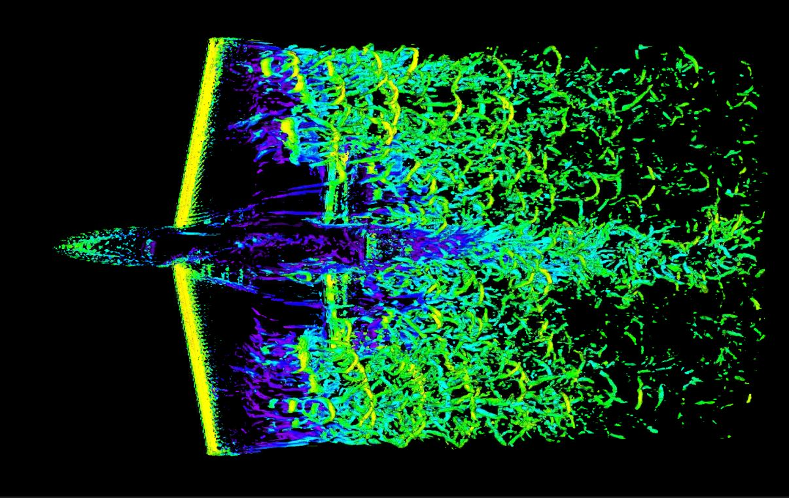| Speed (m/s) | Angle of Attack (deg) | Lift (N) | Drag (N) |
|---|---|---|---|
| 16 | 4 | 61.7 | 8.9 |
| 8 | 4 | 27.2 | 2.4 |
| 5 | 4 | 13.5 | 1.2 |
The airframe design went through several iterations to ensure it was 3D-printable and manufacturable. Initially, the structure was too flimsy, so I incorporated carbon fiber tubes to reinforce the wings and the fuselage. The special PolyLite PLA material, which has 40% lower density than regular PLA, was used for its weight-saving properties, although it required precise tuning of the 3D printer to produce high-quality results. The design was also adjusted to allow for assembly using bolt joints, ensuring a rigid structure while keeping components removable for repairs or modifications.
The control surfaces were designed for smooth, reliable operation with small lightweight metal gear servos. I incorporated a bearing mechanism into the wing, allowing for axial stability and flutter prevention. The surfaces were secured but designed to be easily removed for maintenance.
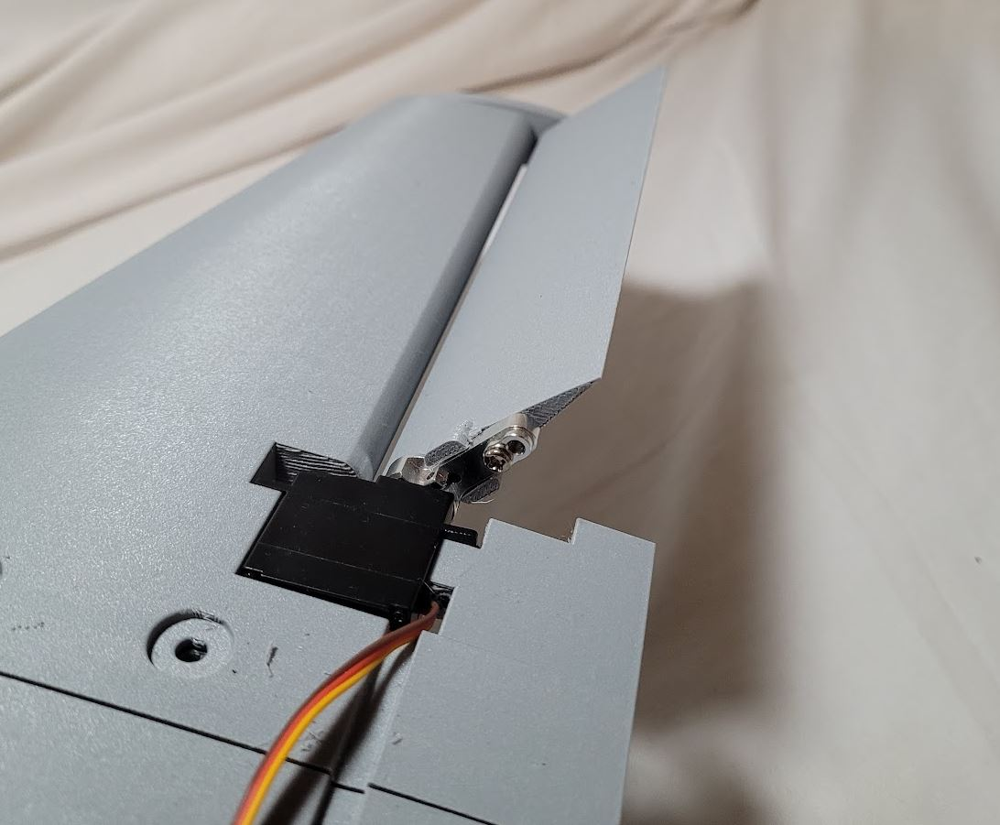The landing gear incorporates a custom 3D-printed steering mechanism designed to bear significant weight while still allowing for smooth rotation. A bearing stack was integrated to ensure durability and precision, with steering actuated remotely via a servo.
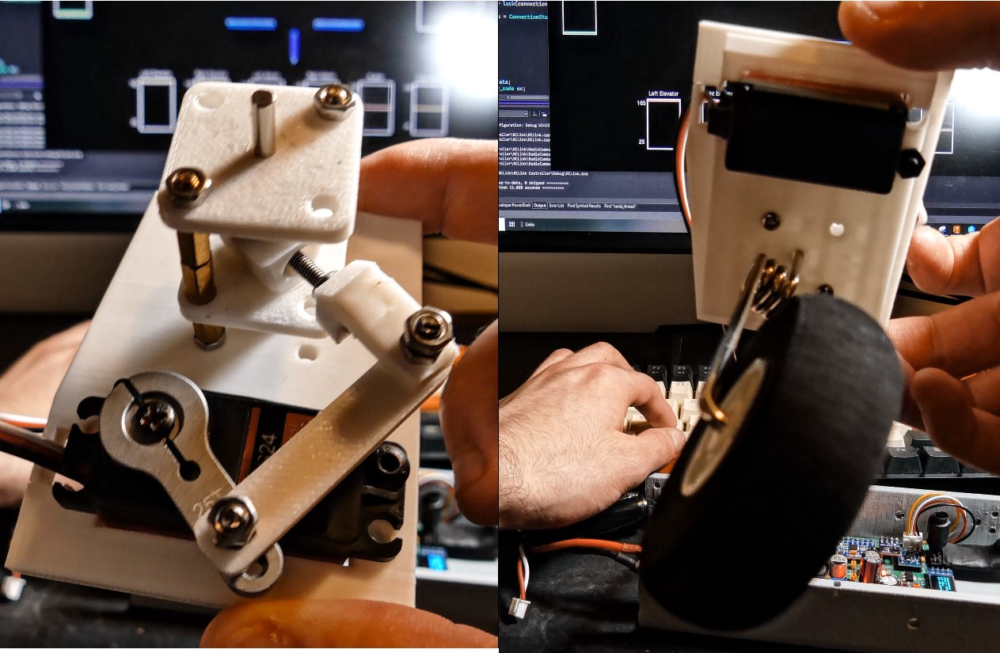